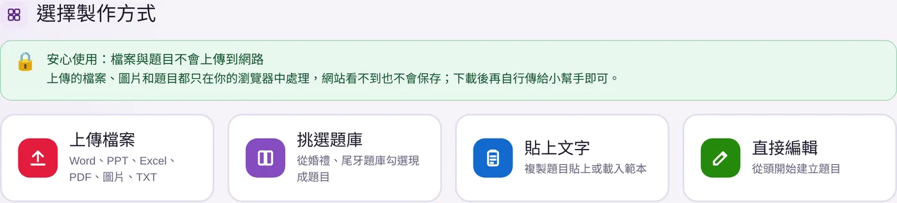
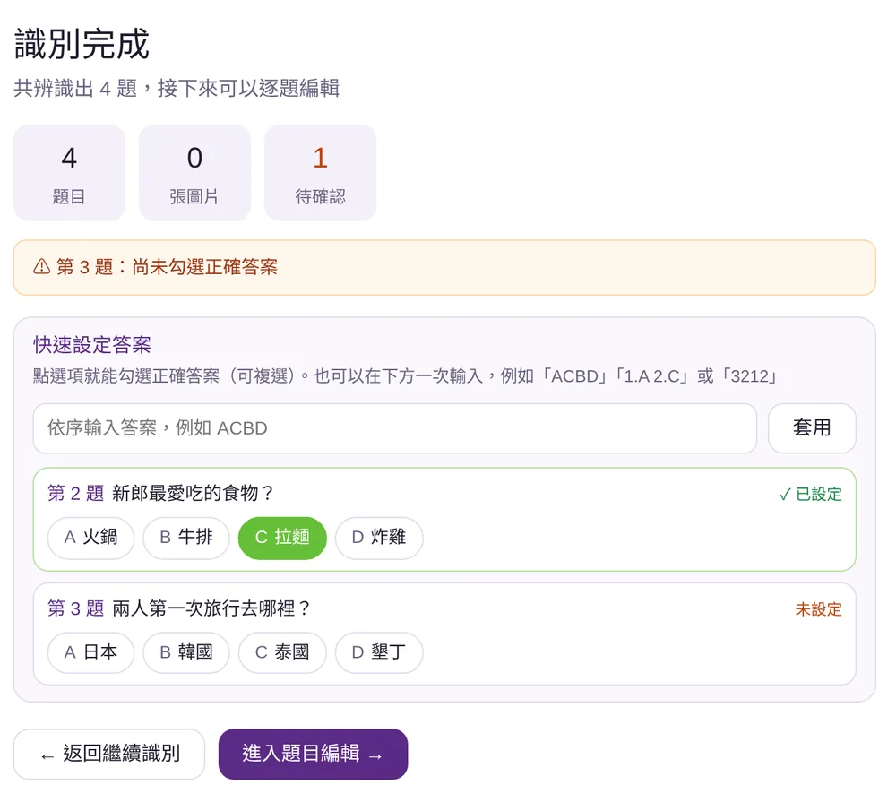
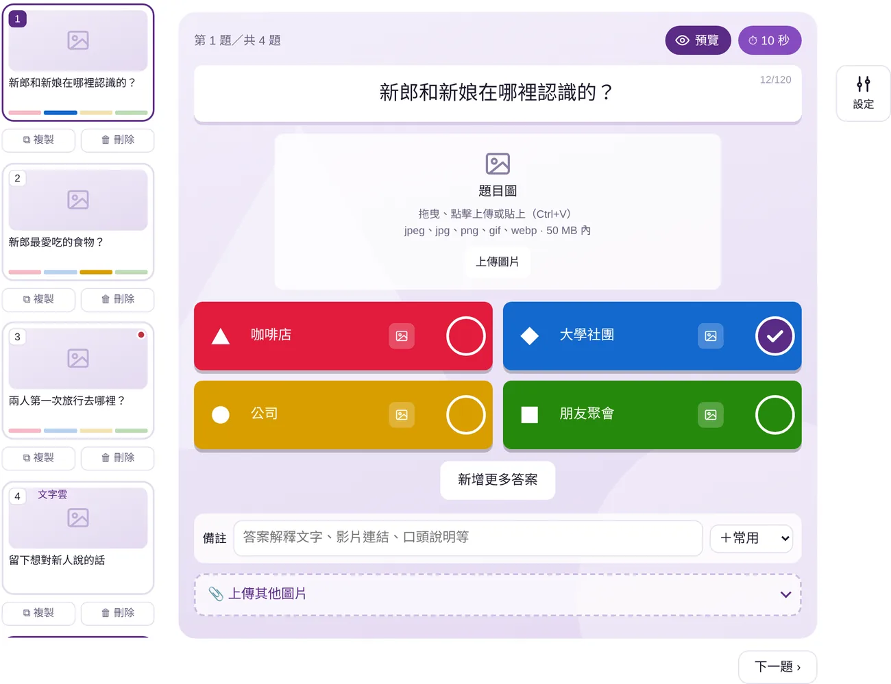
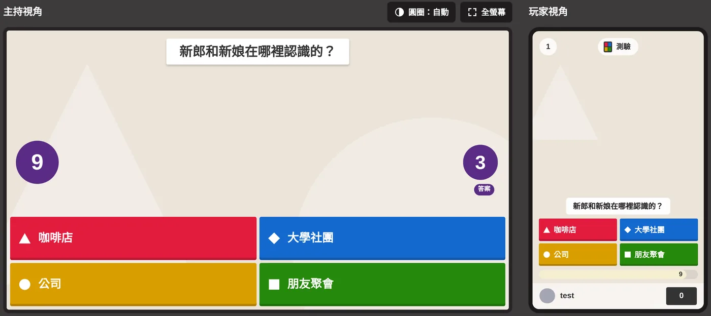
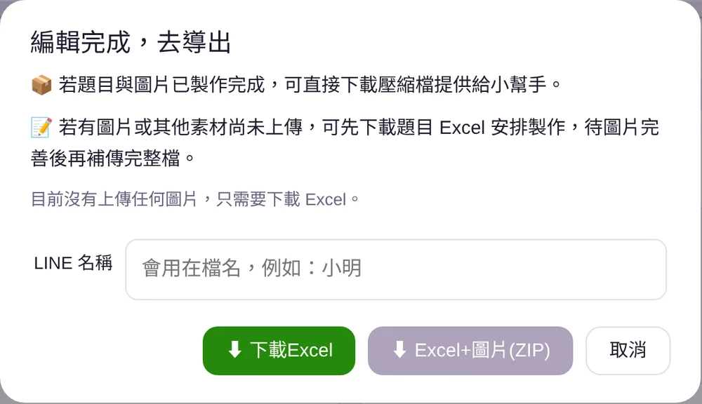

使用說明
5 個步驟做好 Kahoot 題目，從放入題目到傳給小幫手。
檔案和題目只在你的瀏覽器裡處理，不會上傳到網路；做到一半會自動存草稿，下次用同一個瀏覽器打開就能接著做。
1
選擇製作方式
上傳檔案、挑選題庫、貼上文字或直接編輯

- 上傳檔案：Word、PPT、Excel、PDF、圖片、TXT 都可以，Word／PPT 裡的圖片會自動放進對應題目
- 挑選題庫：婚禮、尾牙現成題目，勾選後按「匯入」
- 貼上文字：從 LINE、記事本複製題目貼上，或載入範本參考格式
- 直接編輯：從空白開始，一題一題建立
- 上傳的檔案文字會先放到「貼上文字」區，確認沒問題後按「開始辨識題目」
2
確認辨識結果
自動抓出題目、選項和答案，沒抓到的馬上補

- 沒抓到答案的題目會列在「快速設定答案」，點選項就能勾，可以複選
- 也能在輸入框一次輸入「ACBD」，照順序套用
- 這些答案寫法都認得：✅ 台北台北(答案)＊台北【台北】（台北）答案：C( B )1.
3
編輯題目
改題型、秒數、分數，放上題目和選項圖片

- 點左邊縮圖切換題目，直接在畫面上修改題目和選項，勾選圓圈就是正確答案
- 右邊「設定」可以改題型、秒數和分數（暖身題不計分、分數加倍）
- 題目、選項都能放圖片，也能裁剪或設為背景
- 拖曳左邊縮圖就能調整題目順序
4
預覽畫面
看主持大螢幕和玩家手機上的樣子

- 按題目上方的「預覽」，同時看主持大螢幕和玩家手機畫面
- 會模擬倒數、作答人數和公布答案
- 可以切換全螢幕，檢查字會不會太長、圖片清不清楚
5
導出並傳給小幫手
下載 Excel 或 ZIP，用 LINE「檔案」傳送

- 全部做好後，按頁面最下方的「✓ 編輯完成，去導出 →」
- 填上 LINE 名稱，會用在檔名，方便小幫手對照
- 下載 Excel；有上傳圖片的話，請下載「Excel+圖片(ZIP)」
- 用 LINE 的「檔案」傳給小幫手，不要用「相片」，圖片才不會被壓縮
- 如果還有漏掉的地方（例如沒勾答案、沒填標題），按鈕上方會先提醒，點一下就會跳到那一題